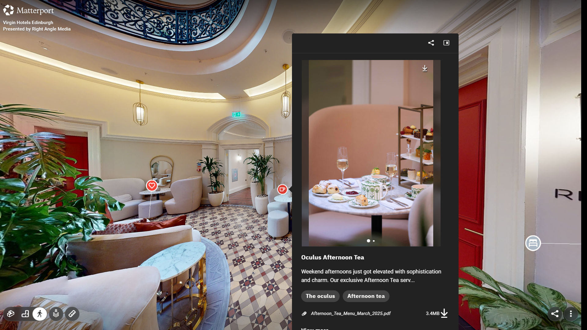
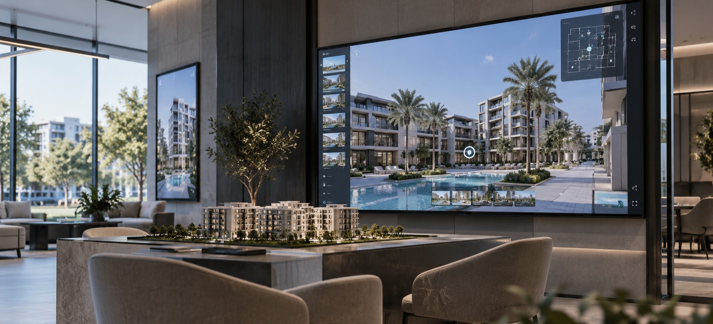

صورة أكثر احترافية
تقديم المشروع أو المؤسسة بطريقة تعكس هويتها ومستوى عملها.
أبعاد العراق | حلول رقمية وتجارب تفاعلية
نطوّر المواقع الإلكترونية، التطبيقات والأنظمة المخصصة، وننفذ الجولات الافتراضية والمحتوى التفاعلي بما يخدم طريقة عمل المشروع وعرضه وتواصله مع جمهوره.

01
الحضور الرقمي للمشروع
الحضور الرقمي المنظم يجمع المعلومات، الخدمات والمحتوى ضمن تجربة واضحة، ويسهّل على العميل أو الزائر الوصول إلى ما يحتاجه والتفاعل مع المشروع من نقطة واحدة.
تقديم المشروع أو المؤسسة بطريقة تعكس هويتها ومستوى عملها.
جمع الخدمات، التفاصيل والمحتوى المهم ضمن تجربة واحدة واضحة.
تسهيل الوصول إلى المشروع ومحتواه عبر الموقع، الرابط أو QR Code.
إمكانية ربط المواقع، الأنظمة، التطبيقات والمحتوى التفاعلي ضمن منظومة واحدة.
02
الحلول الرقمية
تطور أبعاد العراق مواقع إلكترونية، تطبيقات وأنظمة مخصصة تساعد الشركات والمؤسسات على تنظيم أعمالها، عرض خدماتها وتحسين تفاعل المستخدم مع المشروع.
يتم بناء الحل من الصفر بحسب الاحتياج الفعلي وآلية العمل، مع إمكانية تطويره وتوسيعه مستقبلاً.
تصميم وتطوير مواقع مخصصة للشركات، المؤسسات والمشاريع لعرض الخدمات، المعلومات والمحتوى ضمن تجربة واضحة ومتجاوبة.
تطوير تطبيقات مخصصة للخدمات، الحجوزات، عرض المحتوى أو أي تجربة تحتاج إلى الوصول المباشر من الهاتف.
أنظمة لتنظيم العمليات والبيانات والصلاحيات وربط الأقسام ضمن واجهة واحدة مصممة حسب آلية العمل.
تطوير حلول خاصة لإدارة الحجوزات، العملاء، المخزون، المبيعات أو أي Workflow يحتاج إلى نظام رقمي مخصص.
Websites · Apps · Business Systems · Custom Solutions
لا نعتمد قالباً واحداً لكل مشروع؛ الحل يُبنى حسب الاحتياج وطريقة العمل الفعلية.03
الجولات الافتراضية
تحول الجولة الافتراضية المكان الحقيقي إلى نموذج رقمي يمكن التجول داخله واستكشاف تفاصيله ومساحاته عن بُعد، مع الحفاظ على العلاقة الفعلية بين أجزاء المكان.
ويمكن استخدامها للعرض والتسويق، أو كمرجع بصري للمشروع، والتوثيق الهندسي، ومشاركة الموقع مع العملاء والفرق دون الحاجة إلى وجودهم داخله.
مشاهدة المكان بأكثر من منظور لفهم توزيع المساحات والعلاقة بين أجزائه.
أخذ قياسات ومسافات من داخل الجولة والرجوع إليها عند الحاجة.
إضافة نصوص، صور، روابط أو معلومات توضيحية داخل نقاط محددة من المكان.
الاحتفاظ بمرجع بصري وتفاعلي للموقع يمكن الرجوع إليه ومشاركته مستقبلاً.
04
من عملية تصوير واحدة
لا تقتصر عملية التصوير على إنشاء الجولة؛ إذ يمكن الاستفادة من بياناتها لإنتاج محتوى وأدوات إضافية للاستخدام في العرض، التوثيق والتسويق.




نماذج فعلية لمشاريع ومساحات تم توثيقها وتجهيزها للاستكشاف الرقمي.
نموذج الجولة 01
نموذج الجولة 02
نموذج الجولة 03
05
طرق عرض الجولة
يمكن تشغيل الجولة الافتراضية ومشاركتها على مختلف الأجهزة والمنصات، لتناسب طريقة عرض المشروع وطبيعة الجمهور المستهدف.

مشاركة الجولة ليتمكن المستخدم من استكشاف المكان مباشرة من الهاتف أو الحاسوب.
تشغيل الجولة على شاشة كبيرة أو شاشة لمس داخل المعارض، المكاتب ومراكز العرض.
ربط الجولة بالمطبوعات، اللوحات، المعارض أو أي مادة تعريفية للوصول إليها مباشرة.
استكشاف المكان من خلال نظارات الواقع الافتراضي لتقديم تجربة أكثر اندماجاً.
06
مجالات الاستخدام
عرض الوحدات والمشاريع عن بُعد ودعم عمليات التسويق والبيع والتوثيق.
استعراض الغرف، المرافق والقاعات قبل الحجز أو الزيارة.
توثيق المواقع وخطوط العمل وإتاحة استكشافها للفرق والعملاء عن بُعد.
توثيق المواقع التراثية، المتاحف والمعارض وإتاحتها للاستكشاف رقمياً.
تقديم المساحات والمحتوى بطريقة تفاعلية قبل الزيارة أو بعدها.
توثيق المساحات والمرافق وإنشاء مرجع رقمي يمكن مشاركته والرجوع إليه.
07
أبعاد العراق
تتولى أبعاد العراق عملية تنفيذ الجولة الافتراضية من التصوير والمسح وحتى تجهيز المحتوى ونشر التجربة بالصيغة المناسبة للمشروع.
أبعاد العراق هي أول جهة عراقية متخصصة في تنفيذ الجولات الافتراضية الاحترافية للمشاريع والمنشآت.
تصوير الموقع وجمع البيانات البصرية والمكانية المطلوبة لبناء الجولة.
بناء الجولة وضبط التنقل وإضافة النقاط والمعلومات المطلوبة.
تجهيز الصور، الفيديوهات والمخرجات الرقمية المرتبطة بالجولة.
تجهيز الجولة للرابط، الموقع الإلكتروني، QR، الشاشات أو نظارات VR.
08
خدمات أبعاد العراق
تنفذ أبعاد العراق مجموعة من الخدمات الرقمية التي يمكن تطويرها بشكل مستقل أو دمجها ضمن منظومة واحدة، بحسب طبيعة المشروع وطريقة عمله والجمهور المستهدف.
تصوير وتوثيق المواقع وتحويلها إلى تجارب تفاعلية قابلة للاستكشاف والمشاركة.
تصميم وتطوير مواقع مخصصة للشركات، المؤسسات والمشاريع لعرض الخدمات والمحتوى وإدارة الحضور الرقمي.
تطوير تطبيقات مخصصة للخدمات، الحجوزات، المحتوى أو أي تجربة تحتاج إلى الوصول من الهاتف.
بناء أنظمة لإدارة البيانات، العمليات، المستخدمين والصلاحيات بما يتناسب مع آلية العمل الفعلية.
تطوير حلول من الصفر للحجوزات، المبيعات، العملاء، المخزون أو أي Workflow يحتاج إلى نظام خاص.
تجهيز الصور، الفيديوهات، QR Codes، الشاشات التفاعلية ووسائل العرض الرقمي المرتبطة بالمشروع.
من الفكرة إلى الحل الرقمي النهائي.
يمكن تنفيذ خدمة واحدة أو دمج عدة خدمات ضمن منظومة متكاملة للمشروع.يتم احتساب تكلفة تنفيذ الجولة الافتراضية بحسب مساحة الموقع، مع تحديد خدمات الإضافة والاستضافة وفق متطلبات المشروع.
من 50 إلى 500 م²
من 601 إلى 1100 م²
من 1101 إلى 3000 م²
أكثر من 3000 م²
5 دولارات للنقطة الواحدة، وتشمل إضافة نصوص أو صور أو ميديا ومحتوى تفاعلي داخل الجولة.
تبدأ تكلفة استضافة الرابط الواحد من 100 إلى 350 دولاراً بحسب مساحة المشروع ومتطلبات الجولة.
تتوفر الاستضافة بدفعات سنوية أو نصف سنوية، وتشمل الاستضافة والدعم الفني والتحديثات المتفق عليها.
يتم تحديد العدد النهائي للنقاط الذكية ورسوم الاستضافة بعد الاتفاق على تفاصيل المشروع ونطاق التنفيذ.
نحدد معك الاحتياج، ونختار الحل الرقمي الأنسب سواء كان موقعاً إلكترونياً، تطبيقاً، نظاماً مخصصاً أو تجربة تفاعلية متكاملة.
تواصل مع أبعاد العراق